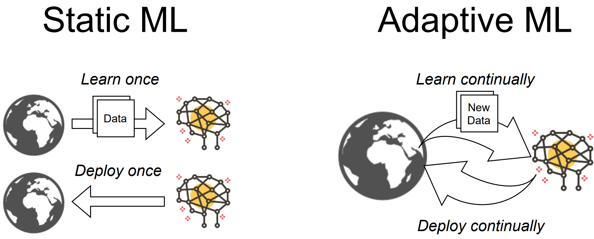

Learning from non-stationary data streams and overcoming catastrophic forgetting still poses a serious challenge for machine learning research. Rather than aiming to improve state-of-the-art, in this work we provide insight into the limits and merits of rehearsal, one of continual learning's most established methods. We hypothesize that models trained sequentially with rehearsal tend to stay in the same low-loss region after a task has finished, but are at risk of overfitting on its sample memory, hence harming generalization. We provide both conceptual and strong empirical evidence on three benchmarks for both behaviors, bringing novel insights into the dynamics of rehearsal and continual learning in general. Finally, we interpret important continual learning works in the light of our findings, allowing for a deeper understanding of their successes.
Eli Verwimp*, Matthias De Lange* and Tinne Tuytelaars (* Equal contribution). Paper
Attaining prototypical features to represent class distributions is well established in representation learning. However, learning prototypes online from streams of data proves a challenging endeavor as they rapidly become outdated, caused by an ever-changing parameter space in the learning process. Additionally, continual learning assumes a non-stationary nature of the data stream, typically resulting in catastrophic forgetting of previous knowledge. As a first, we introduce a system addressing both problems, where prototypes evolve continually in a shared latent space, enabling learning and prediction at any point in time. In contrast to the major body of work in continual learning, data streams are processed in an online fashion, without additional task-information, and an efficient memory scheme provides robustness to imbalanced data streams. Besides nearest neighbor based prediction, learning is facilitated by a novel objective function, encouraging cluster density about the class prototype and increased inter-class variance. Furthermore, the latent space quality is elevated by pseudo-prototypes in each batch, constituted by replay of exemplars from memory. We generalize the existing paradigms in continual learning to incorporate data incremental learning from data streams by formalizing a two-agent learner-evaluator framework, and obtain state-of-the-art performance by a significant margin on eight benchmarks, including three highly imbalanced data streams.
Matthias De Lange and Tinne Tuytelaars. Paper
Presented atArtificial neural networks thrive in solving the classification problem for a particular rigid task, where the network resembles a static entity of knowledge, acquired through generalized learning behaviour from a distinct training phase. However, endeavours to extend this knowledge without targeting the original task usually result in a catastrophic forgetting of this task. Continual learning shifts this paradigm towards a network that can continually accumulate knowledge over different tasks without the need for retraining from scratch, with methods in particular aiming to alleviate forgetting. We focus on task-incremental classification, where tasks arrive in a batch-like fashion, and are delineated by clear boundaries. Our main contributions concern 1) a taxonomy and extensive overview of the state-of-the-art, 2) a novel framework to continually determine stability-plasticity trade-off of the continual learner, 3) a comprehensive experimental comparison of 10 state-of-the-art continual learning methods and 4 baselines. We empirically scrutinize which method performs best, both on balanced Tiny Imagenet and a large-scale unbalanced iNaturalist datasets. We study the influence of model capacity, weight decay and dropout regularization, and the order in which the tasks are presented, and qualitatively compare methods in terms of required memory, computation time and storage.
Matthias De Lange, Rahaf Aljundi, Marc Masana, Sarah Parisot, Xu Jia, Ales Leonardis, Gregory Slabaugh, Tinne Tuytelaars submission at journal IEEE Transactions on Pattern Analysis and Machine Intelligence (TPAMI). TPAMI Arxiv Code
Personalization of models to local user images is prone to three main problems: scalability towards thousands of users, retaining user-privacy, and labeling local user data. Our Dual User-Adaptation framework (DUA) unveils a novel perspective to tackle all of these practical concerns and enables personalization on both the server and local user edge-device. First, we train a sequence of task-specific models on the server, making the number of models independent of the user-count to greatly enhance scalability. These models are aggregated into a single personalized model solely based on user-specific priors. As a consequence, no sensitive user data is shared and using parameter importance avoids the need for labeled user data. Additionally, the DUA framework invigorates a second round of user-data adaptation, but now locally on the user edge-device. Therefore, DUA manifests two personalization opportunities without sharing any explicit user data. Code and benchmarks are publicly available online.
Matthias De Lange, Sarah Parisot, Xu Jia, Ales Leonardis, Gregory Slabaugh, Tinne Tuytelaars at CVPR conference. Paper Code
Presented atMany of the contemporary Machine Learning models are trained only once and remain static when deployed. But shouldn't generally intelligent systems evolve with their surrounding world? Find out more in my introduction to the field of Continual Learning.
I'm excited to announce that our Workshop "Continual Learning in Computer Vision" has been accepted for a second edition at CVPR 2021! The workshop was selected among more than 100 proposals this year with excellent feedback. Last year edition was a great success, we will make sure to make it even better, diverse and inclusive this year! Check out the website for more details!
We won the Just-AI challenge and placed 2nd at Columbia Road challenge with a personalized experience with a conversational AI-based shopping assistant. Hack Junction was an amazing experience with a great team of engineering friends. Hacking and coding our way through the lockdown (:
Check out our winning project Nutreat: Shop Smarter. Watch our video!
KU Leuven
PSI Seminar Organizer
Reviewer@ ICML2020, TPAMI, CVPR2021, IJCAI2021
2018 - PresentLaureate (Highest grade 2018)
Summa Cum Laude
KU Leuven
2017 - 2018Summa Cum Laude
KU Leuven
2014 - 2017Don Boscocollege Zwijnaarde
2008 - 2014